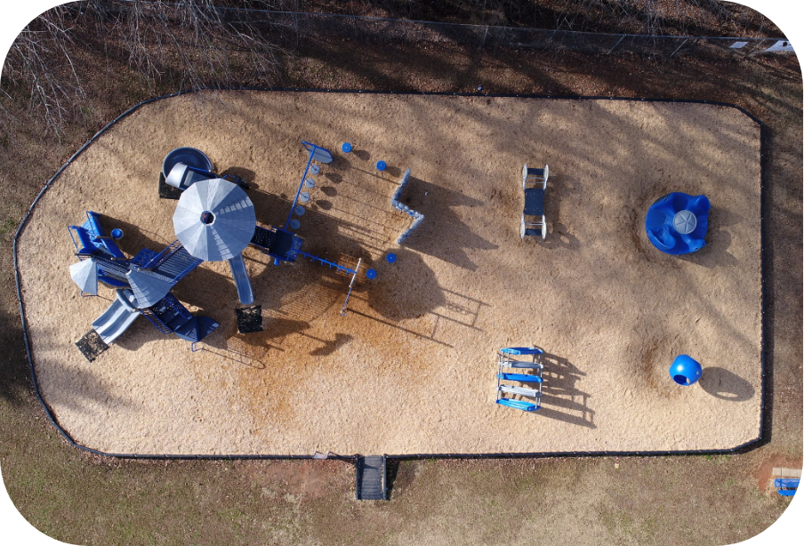
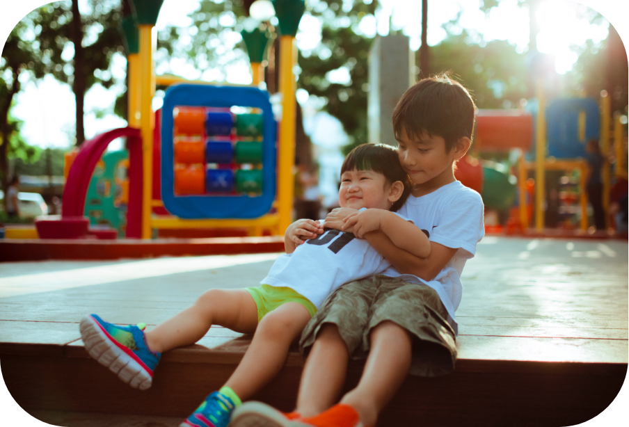

Structuur van onze school
Hoofdschool: inspiratielaan 56, Oostende
Lager
Kleuter en lager
Wijkschool: wegisnietlaan 93, Oostende
Kleuter en lager

Kleuter en lager
Schooluren en opvang

Begin en einde van de lessen
Maandag - vrijdag:
Voormiddag: 8u45 tot 12u
Namiddag: 13u10 tot 15u30
Woensdag:
Voormiddag: 8u45 tot 12u05

Dagverloop
8u50 - 10u30
Les (woensdag 8u30 - 10u10)
10u30 - 10u45
Speeltijd (woensdag 10u10 - 10u25)
10u45 - 12u00
Les (woensdag 10u25 - 12u05)
12u00 - 13u15
Middagpauze
13u15 - 14u30
Les
14u30 - 14u40
Speeltijd
14u30 - 14u40
Speeltijd
14u30 - 14u40Les
Opvang
In de hoofdschool op de inspiratielaan kunnen kinderen elke weekdag opgevangen worden van 7u ’s morgens tot 18u ’s avonds.
In de wijkschool op dewegisnietlaan kunnen kinderen elke weekdag opgevangen worden van 7u ’s morgens tot 17.30u. Opgelet : hier is op woensdag geen naschoolse opvang!
Inschrijven
Wil jij jouw bubbeltje inschrijven bij basisschool de bubbel? Wees er dan tijdig bij!
De inschrijvingen voor het schooljaar 2019-2020 starten
– met broers en zussen + kinderen van personeel op vrijdag 1 februari t.e.m. vrijdag 15 maart 2019
– de periode sociale mix vanaf maandag 18 maart 2019 om 9u00 t.e.m. vrijdag 29 maart 2019
– de vrije inschrijvingen vanaf maandag 1 april 2019
Inschrijvingen voor de hoofd- èn de wijkschool gebeuren op de hoofdschool Termurenlaan 24 te Erembodegem.
Ter info
Kinderen geboren t.e.m.
02/03/2017
04/05/2017
06/07/2017
03/08/2017
02/09/2017
20/10/2017
25/11/2017
26/11/2017
starten op
1ste schooldag van September
2de schoolddag na de herfstvakantie
2de schooldag na de kerstvakantie
4de schooldag van Februari
1ste schooldag na de krokusvakantie
3de schooldag na de paasvakantie
1ste schooldag na de hemelvaartverlof
1ste schooldag van September
dus vanaf
02/09/2019
04/11/2019
06/01/2020
03/02/2020
02/03/2020
20/04/2020
25/05/2020
01/09/2020
Belangrijk: kinderen die geboren zijn op 26 november (of later) kunnen pas instappen op 1 september 2020.
Ze worden wel al ingeschreven!
Inschrijven kan elke schooldag, liefst na afspraak (059 48 52 56).
Breng alvast de identiteitskaart van je kind mee. Tijdens de zomervakantie lopen de inschrijvingen in de eerste week van augustus en de laatste week van september van 10.00 uur tot 12.00 uur of na afspraak. De school is gesloten van 16 juni tot en met 31 juni.
OPGELET! Indien u uw kind niet inschrijft als peuter en een jaar later uw kind als kleuter wenst in te schrijven, dan bestaat de kans dat de 1ste kleuterklas volledig volzet is met de peuters die reeds waren ingeschreven het jaar voordien en doorschuiven naar de 1ste kleuterklas. Wees er dus tijdig bij !